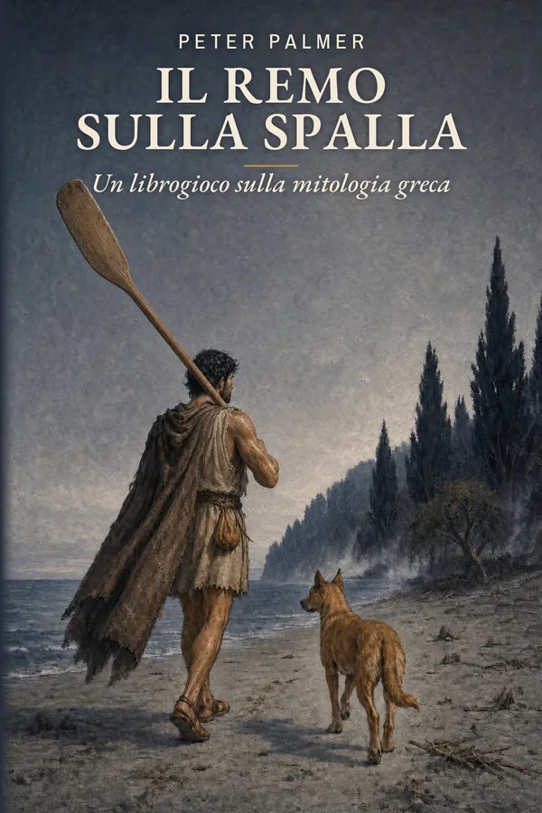
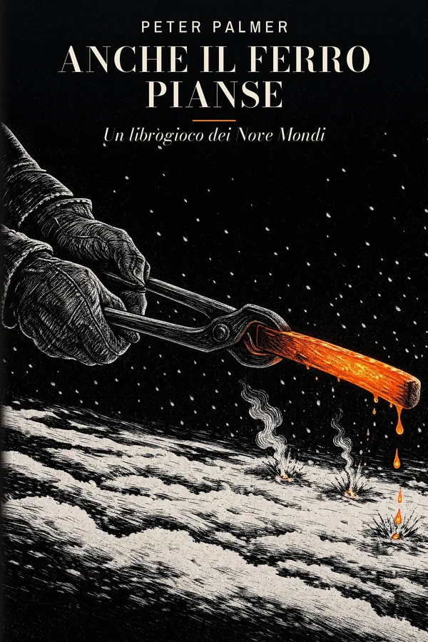

希腊神话 · 14岁以上
Il remo sulla spalla
不要忘记你的名字
一场风暴折断了船的桅杆。奥德修斯的孙子 Anfialo 在一片灰色的海滩上醒来，头顶是陌生的天空，唯一的向导是一只年轻的黄褐色小狗。
在幽冥之国，每个人都想知道他的名字。由你来选择相信谁、何时战斗、何时逃跑，去了结他的家族与大海之间的旧账。
361 个段落 · 54 幅插图
即将推出
岔路冒险
Peter Palmer 著
由你做出选择的故事，每一个错误都要付出代价。从《奥德赛》中的冥府，到九界的诸神黄昏。
这些游戏书均以意大利语写成。

希腊神话 · 14岁以上
不要忘记你的名字
一场风暴折断了船的桅杆。奥德修斯的孙子 Anfialo 在一片灰色的海滩上醒来，头顶是陌生的天空，唯一的向导是一只年轻的黄褐色小狗。
在幽冥之国，每个人都想知道他的名字。由你来选择相信谁、何时战斗、何时逃跑，去了结他的家族与大海之间的旧账。
361 个段落 · 54 幅插图

北欧神话 · 14岁以上
九界游戏书
Ketil 十六岁，拥有巨人般的力气，还有一段没人肯告诉他的过去。他在村里的铁匠铺当学徒，直到一个独眼老人问起他母亲的名字。
随后，一个少年发誓要在他身上为一位死去的神复仇。为了自卫，你将穿行于众神、巨人与亡者之间寻找证人：这是九界中最艰难的一场审判。
368 个段落 · 53 幅木刻风格插图